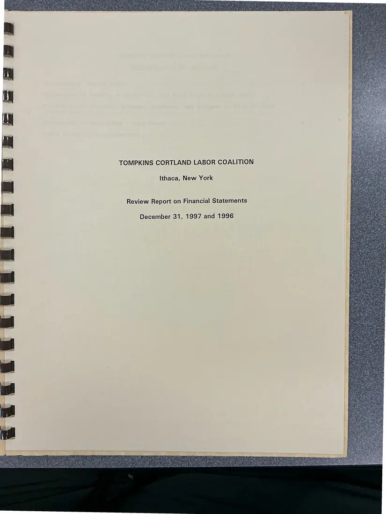
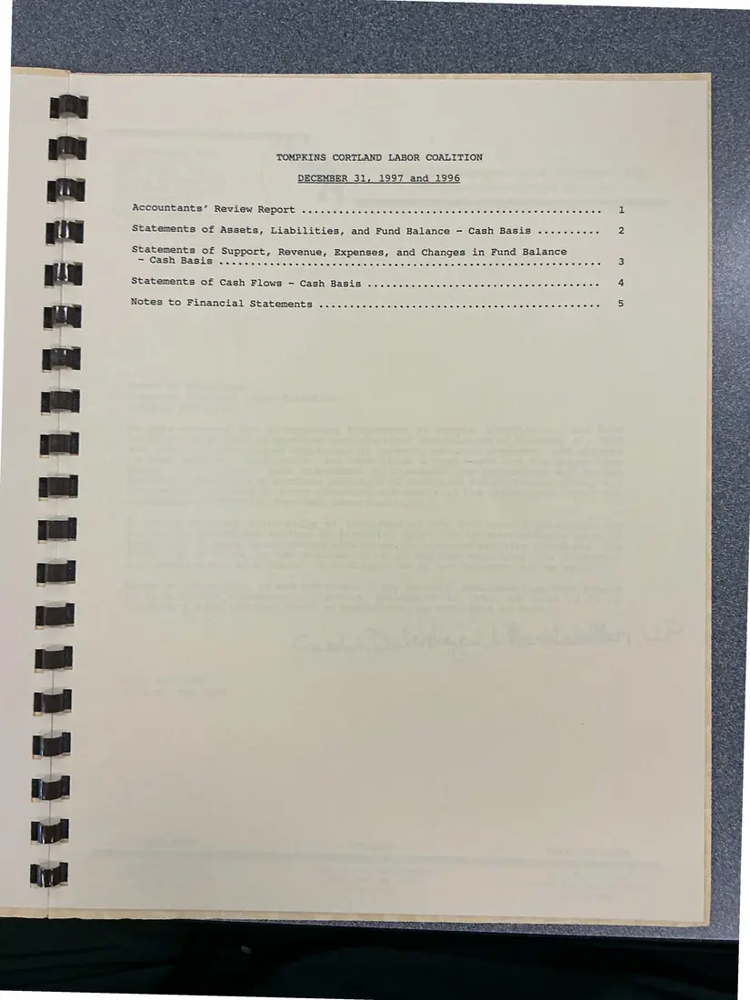
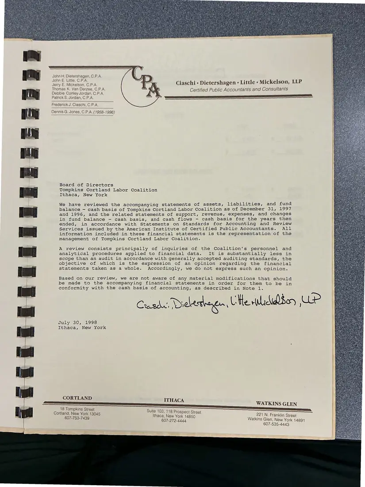
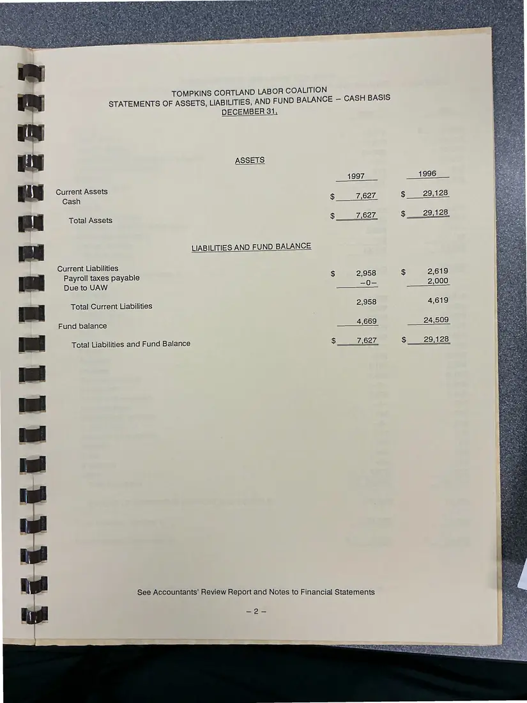
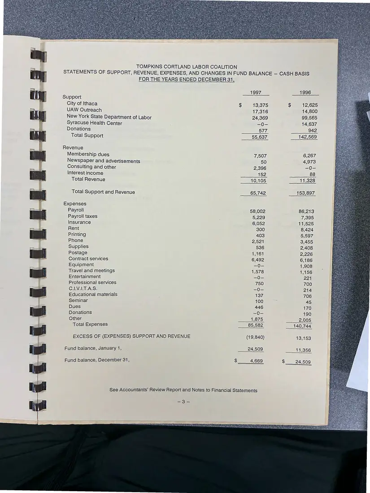
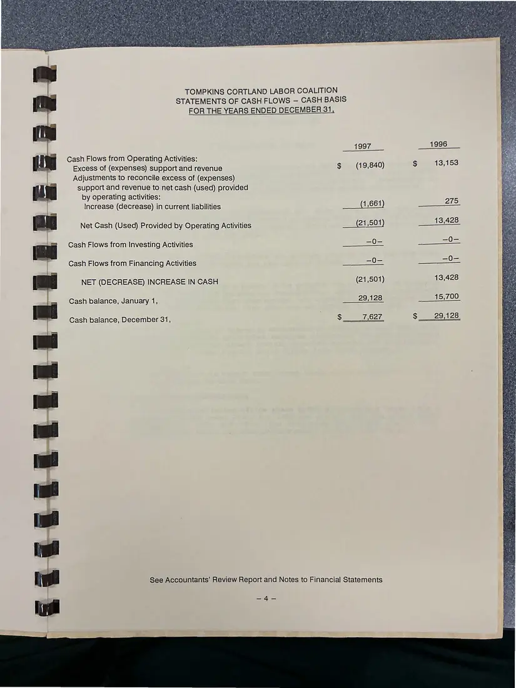
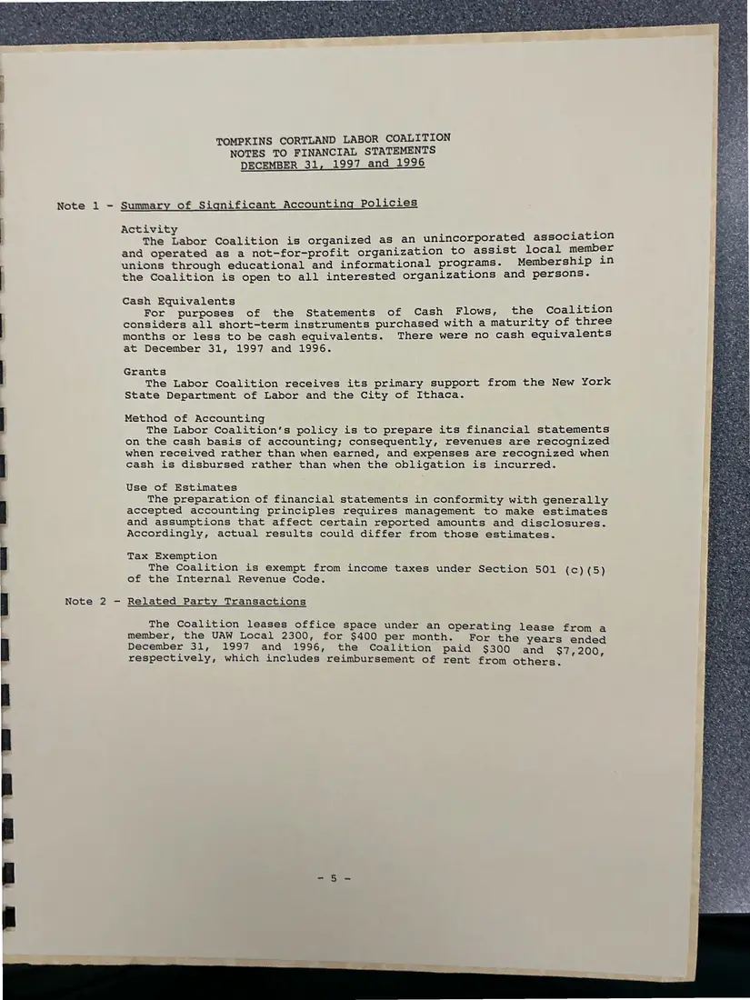

Financial report, 7 pages
Tompkins Cortland Labor Coalition review report on financial statements, 1997 and 1996
December 31, 1997 and 1996 (report dated July 30, 1998)
An accountants' review report (July 30, 1998) on the Coalition's financial statements for 1997 and 1996. The pages were photographed back-to-front and are shown in reading order.
Download or cite this itemPages


(open zoom view)Read the page text (machine-read, many errors)
This text was generated automatically from the photograph and has not been corrected. The image is the authoritative record.
ie . ‘ Dept i hare ‘ “ S te * Mainly - 3 TOMPKINS CORTLAND LABOR COALITION Ithaca, New York Review Report on Financial Statements December 31, 1997 and 1996 cS a phase 7 4 ’ fr ra, Neat Pari y z ee ae Ae « Ba Pe NG Skis we 4 i ’ PW ate * aie. % ¥! ead ss ee ih rh te PAE


(open zoom view)Read the page text (machine-read, many errors)
This text was generated automatically from the photograph and has not been corrected. The image is the authoritative record.
TOMPKINS CORTLAND LABOR COALITION DECEMBER 31, 1997 and 1996 Accountants’ Review REPOLE Sn calc e sole ec te oo cia ciele ele cle cinleie 6s 'e wiclsiclciwlu die we sicaiee tatements of Assets, Liabilities, and Fund Balance - Cash Basis .......... Statements of Support, Revenue, Expenses, and Changes in Fund Balance ~ Cash Basis . ene esre eevee ee eee eer eee eeerereererereezreresener eer eee nenterereeetese * Statements (of (Cash Flows — Cash Basie 0c. come ee eo eee s Notes to Financial Statements (os. an ln ee crane gly : Fe a


(open zoom view)Read the page text (machine-read, mostly readable)
This text was generated automatically from the photograph and has not been corrected. The image is the authoritative record.
John H. Dietershagen, C.P.A med 5 insta ey x ; Ciaschi « Dietershagen « Little « Mickelson, LLP Thomas kK. Van Derzee, C.P.A. Certified Public Accountants and Consultants Debbie Conley Jordan, C.P.A. Patrick S. Jordan, C.P.A. ermal Frederick J. Claschi, C.P.A, Board of Directors Tompkins Cortland Labor Coalition Ithaca, New York We have reviewed the accompanying statements of assets, liabilities, and fund balance - cash basis of Tompkins Cortland Labor Coalition as of December 31, 1997 and 1996, and the related statements of support, revenue, expenses, and changes in fund balance - cash basis, and cash flows - cash basis for the years then ended, in accordance with Statements on Standards for Accounting and Review Services issued by the American Institute of Certified Public Accountants. All information included in these financial statements is the representation of the management of Tompkins Cortland Labor Coalition. A review consists principally of inquiries of the Coalition’s personnel and analytical procedures applied to financial data. It is substantially less in scope than an audit in accordance with generally accepted auditing standards, the objective of which is the expression of an opinion regarding the financial statements taken as a whole. Accordingly, we do not express such an opinion. Based on our review, we are not aware of any material modifications that should be made to the accompanying financial statements in order for them to be in conformity with the cash basis of accounting, as described in Note 1. July 30, 1998 Tthaca, New York CORTLAND ITHACA WATKINS GLEN 18 Tompkins Street Suite 103, 118 Prospect Street Cortland, New Y. nd, New York 19045 Ithaca, New York 14850 Fa aan ni Stceat 607-272-4444 eae ees Bat


(open zoom view)Read the page text (machine-read, mostly readable)
This text was generated automatically from the photograph and has not been corrected. The image is the authoritative record.
TOMPKINS CORTLAND LABOR COALITION STATEMENTS OF ASSETS, LIABILITIES, AND FUND BALANCE — CASH BASIS DECEMBER 31 Current Assets Cash Total Assets IABILITIES AND FUND BALANCE LIABILITIES AND FUND BALANVE Current Liabilities Payroll taxes payable Due to UAW Total Current Liabilities Fund balance Total Liabilities and Fund Balance See Accountants’ Review Report and Notes to Financial Statements


(open zoom view)Read the page text (machine-read, mostly readable)
This text was generated automatically from the photograph and has not been corrected. The image is the authoritative record.
TOMPKINS CORTLAND LABOR COALITION STATEMENTS OF SUPPORT, REVENUE, EXPENSES, AND CHANGES IN FUND BALANCE — CASH BASIS Support City of Ithaca UAW Outreach FOR THE YEARS ENDED DECEMBER 31 New York State Department of Labor Syracuse Health Center Donations Total Support Revenue Membership dues Newspaper and advertisements Consulting and other Interest income Total Revenue Total Support and Revenue Expenses Payroll Payroll taxes Insurance Rent Printing Phone Supplies Postage Contract services Equipment Travel and meetings Entertainment Professional services C.LV.LT.A.S. Educational materials Seminar Dues Donations Other Total Expenses EXCESS OF (EXPENSES) SUPPORT AND REVENUE Fund balance, January 1, Fund balance, December 31, (19,840) 24,509 4,669 See Accountants’ Review Report and Notes to Financial Statements = 30 1996 12,625 14,800 99,565 14,637 942 142,569 6,267 11,328 153,897 86,213 7,395 11,525 8,424 5,597 3,455 2,408 2,226 6,186 1,908 1,156 221 700 214 706 170 190 2,005 140,744 13,153 11,356 24,509


(open zoom view)Read the page text (machine-read, contains errors)
This text was generated automatically from the photograph and has not been corrected. The image is the authoritative record.
TOMPKINS CORTLAND LABOR COALITION STATEMENTS OF CASH FLOWS — CASH BASIS FOR THE YEARS ENDED DECEMBER 31, 1997 1996 Cash Flows from Operating Activities: 43.153 Excess of (expenses) support and revenue G (19,840) $ , Adjustments to reconcile excess of (expenses) (2 support and revenue to net cash (used) provided by operating activities: | Increase (decrease) in current liabilities 1,661 EE COS) [lg Net Cash (Used) Provided by Operating Activities 21,501 peo 425) [aa Cash Flows from Investing Activities s0S eo | Cash Flows from Financing Activities sO ee sO = NET (DECREASE) INCREASE IN CASH (21,501) 13,428 Cash balance, January 1, Be 15,700 ba i Cash balance, December 31, Sime 62a Seo leh) [mE See Accountants’ Review Report and Notes to Financial Statements


(open zoom view)Read the page text (machine-read, mostly readable)
This text was generated automatically from the photograph and has not been corrected. The image is the authoritative record.
TOMPKINS CORTLAND LABOR COALITION NOTES TO FINANCIAL STATEMENTS DECEMBER 31, 1997 and 1996 Note 1 - Summary of Significant Accounting Policies Note 2 - Activit ie The Labor Coalition is organized as an unincorporated association and operated as a not-for-profit organization to assist local member unions through educational and informational programs. Membership in the Coalition is open to all interested organizations and persons. Cash Equivalents Ls For purposes of the Statements of Cash Flows, the Coalition considers all short-term instruments purchased with a maturity of three months or less to be cash equivalents. There were no cash equivalents at December 31, 1997 and 1996. Grants The Labor Coalition receives its primary support from the New York State Department of Labor and the City of Ithaca. Method of Accounting The Labor Coalition's policy is to prepare its financial statements on the cash basis of accounting; consequently, revenues are recognized when received rather than when earned, and expenses are recognized when cash is disbursed rather than when the obligation is incurred. Use of Estimates The preparation of financial statements in conformity with generally accepted accounting principles requires management to make estimates and assumptions that affect certain reported amounts and disclosures. Accordingly, actual results could differ from those estimates. Tax Exemption The Coalition is exempt from income taxes under Section 501 (c) (5) of the Internal Revenue Code. Related Party Transactions The Coalition leases office space under an operating lease from a member, the UAW Local 2300, for $400 per month. For the years ended December 31, 1997 and 1996, the Coalition paid $300 ana $7,200 respectively, which includes reimbursement of rent from others. : :
See something wrong, or recognize a person or event? Send a correction. If you hold rights in this item or think it should not be public, write to the same address.